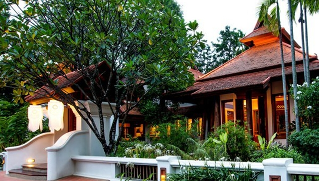

ที่พักรอบเชิงดอยสุเทพ
เนื่องจากดอยสุเทพอยู่ไม่ไกลจากตัวเมือง นักท่องเที่ยวส่วนใหญ่นิยมพักในย่านมหาวิทยาลัยเชียงใหม่หรือนิมมานเหมินท์ ซึ่งอยู่ระหว่างเส้นทางขึ้นดอยและตัวเมือง สะดวกทั้งการขึ้นไปกราบพระธาตุยามเช้าและการเดินทางเข้าเมืองยามเย็น

🖼️รูปโรงแรม/รีสอร์ทใกล้เชิงดอยสุเทพ
ระดับกลาง-หรู
รีสอร์ทเชิงดอยโซนสุเทพ
ที่พักแนวรีสอร์ทล้อมด้วยต้นไม้ใหญ่ บรรยากาศเงียบสงบ เหมาะสำหรับผู้ที่อยากตื่นเช้าขึ้นไปสัมผัสอากาศบนดอยก่อนนักท่องเที่ยวกลุ่มใหญ่จะมาถึง
ใกล้มช.
โฮสเทล/โรงแรมย่านมหาวิทยาลัยเชียงใหม่
ย่านที่เต็มไปด้วยร้านกาแฟและที่พักราคาเข้าถึงได้ เดินทางขึ้นดอยสุเทพได้สะดวกผ่านถนนห้วยแก้ว เหมาะสำหรับนักท่องเที่ยวงบประมาณจำกัด
หรู วิวเมือง
โรงแรมวิวเมืองโซนนิมมานเหมินท์
โรงแรมสไตล์โมเดิร์นในย่านนิมมานเหมินท์ ใกล้คาเฟ่และร้านอาหารหลากสไตล์ เดินทางขึ้นดอยสุเทพหรือเข้าเมืองเก่าได้สะดวกทั้งสองทาง